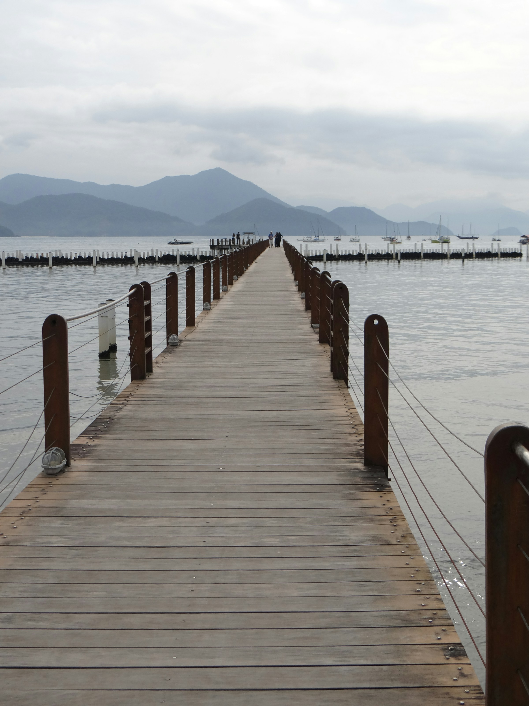
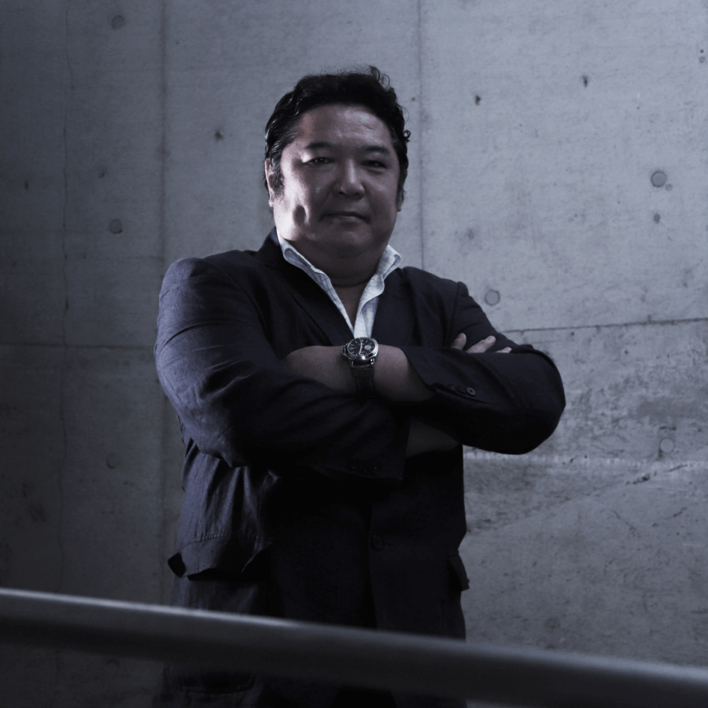
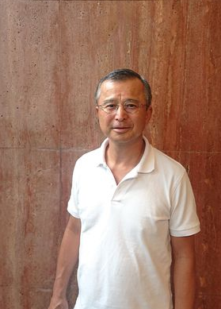

ボードウォーク・キャピタルは、アドバイザリー・インキュベーション・投資を通じて、世界に挑む企業と人材を支援する投資会社です。

Boardwalk Capital挑戦する企業と人材の、
成長を支える。
2016年の創業以来、私たちはアドバイザリー・インキュベーション・投資を通じて、国内外で挑戦する企業や起業家を支援してきました。金融の最前線で培った知見と人脈を活かし、資金だけでなく、事業の成長そのものに伴走します。アジアをはじめ海外の企業・起業家とも連携し、グローバルに事業を展開しています。
資本政策、資金調達、M&A、海外展開など、経営の重要な意思決定を、金融の専門知識でサポートします。
事業の立ち上げを、戦略立案から組織づくり、ネットワーク構築まで一貫して支援します。
成長が期待される企業や起業家に出資し、中長期の視点で成長を支援します。
1989年ソロモン・ブラザーズ・アジア証券入社。日興シティグループ証券を経て、2009年シティグループ証券 取締役副社長。2010年ストームハーバー証券を設立し代表取締役社長。2016年に当社を設立。

慶應義塾大学法学部卒。三井物産にて為替・債券・株式・プライベートエクイティ投資などに従事し、英国・オランダで通算9年勤務。2019年に当社入社。

慶應義塾大学経済学部卒、ウォートン・スクールMBA。野村證券、モルガン・スタンレー、新生銀行などを経て、PAGジャパン会長を歴任。海外ネットワークを担当。
創業以来、さまざまな業界の成長企業とともに歩んできました。
資金調達や海外展開、新規事業など、経営に関するご相談を承っています。まずはお気軽にお問い合わせください。